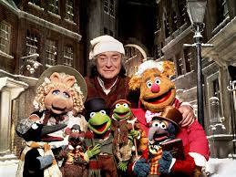

The Muppet Christmas Carol is a 1992 American Christmas musical film directed by Brian Henson (in his feature directorial debut) from a screenplay by Jerry Juhl.
It is the fourth theatrical film featuring the Muppets.
Adapted from the 1843 novella A Christmas Carol by Charles Dickens, the film stars Michael Caine as Ebenezer Scrooge, alongside Muppet performers Dave Goelz, Steve Whitmire, Jerry Nelson, and Frank Oz.
It is the first Muppet film to be produced following the deaths of Muppets creator Jim Henson and performer Richard Hunt; the film is dedicated to both.
The film was released in the United States on December 11, 1992, by Buena Vista Pictures Distribution under its Walt Disney Pictures label. It was a modest box office success and received generally favorable reviews.
It is the first Muppets film to be produced by Walt Disney Pictures, whose parent company would later acquire the rights to the Muppets characters and assets in 2004.
characters
